← 本轮 smoke 总览traex/DeepSeek-V4.1-Flash · 0012
vision-agent · 256×144 · 4.0 FPS · 20 帧 · 状态 complete · 输出 tokens 50622
原始任务Static locked-off single-shot with fixed frame throughout filmed with constant framerate in real-time. The scene shows a realistic scientific demonstration. The scene only contains the described setup and actions. A light-colored wooden coffee table with a few small objects on it, including a brown tennis ball and a smaller red ball. The orange tennis ball rolls straight out of the black pipe over the entire table towards the right side.
当前保存结果
已保存候选与代码修改
这里按时间展示外部捕获的候选，每份均可单独播放。保存新版本不等于完成视觉检查；下方工具证据记录实际看过的图。
候选 01 · 2026-11-08T19:57:17.024532+00:00 · 点开播放与检查图
inspection.png

transition_check.png
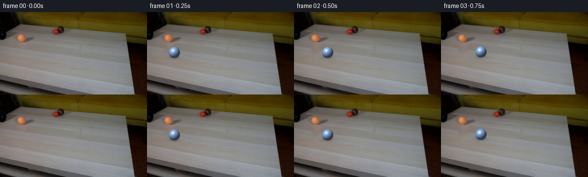
代码变化
--- 上一保存版本
+++ 本次保存版本
@@ -0,0 +1,187 @@
+from pathlib import Path
+
+import cv2
+import numpy as np
+from PIL import Image
+
+from artifact_io import save
+
+
+ROOT = Path(__file__).resolve().parent
+WIDTH = 256
+HEIGHT = 144
+FRAMES = 20
+FPS = 4
+
+BALL_RADIUS = 9.7
+START = np.array([37.0, 72.3])
+END = np.array([249.0, 58.5])
+SUPERSAMPLE = 6
+
+
+def make_clean_plate(source_bgr):
+ """Remove the moving orange ball while retaining the photographed tabletop."""
+ mask = np.zeros((HEIGHT, WIDTH), dtype=np.uint8)
+ cv2.ellipse(mask, (37, 74), (13, 14), 0, 0, 360, 255, -1)
+ plate = cv2.inpaint(source_bgr, mask, 5, cv2.INPAINT_TELEA)
+
+ # The long wood grain is nearly horizontal. A tiny horizontal smoothing pass
+ # inside the repaired patch hides the inpainter's isotropic blur.
+ softened = cv2.GaussianBlur(plate, (0, 0), 0.65)
+ alpha = cv2.GaussianBlur(mask.astype(np.float32) / 255.0, (0, 0), 1.2)
+ plate = plate.astype(np.float32) * (1.0 - alpha[..., None])
+ plate += softened.astype(np.float32) * alpha[..., None]
+ return np.clip(plate, 0, 255).astype(np.uint8)
+
+
+def add_contact_shadow(image, center, radius):
+ """Composite a soft, slightly offset contact shadow beneath the ball."""
+ pad = int(radius * 2.8)
+ x0 = max(0, int(np.floor(center[0])) - pad)
+ x1 = min(WIDTH, int(np.ceil(center[0])) + pad + 1)
+ y0 = max(0, int(np.floor(center[1])) - pad)
+ y1 = min(HEIGHT, int(np.ceil(center[1])) + pad + 1)
+ if x0 >= x1 or y0 >= y1:
+ return image
+
+ yy, xx = np.mgrid[y0:y1, x0:x1].astype(np.float32)
+ dx = (xx - (center[0] - 1.7)) / (radius * 1.38)
+ dy = (yy - (center[1] + radius * 0.76)) / (radius * 0.43)
+ dist2 = dx * dx + dy * dy
+ alpha = np.exp(-1.65 * dist2).astype(np.float32)
+ alpha *= 0.28
+
+ patch = image[y0:y1, x0:x1].astype(np.float32)
+ shadow_color = np.array([43.0, 38.0, 33.0], dtype=np.float32) # BGR
+ patch *= 1.0 - alpha[..., None]
+ patch += shadow_color * alpha[..., None]
+ image[y0:y1, x0:x1] = np.clip(patch, 0, 255).astype(np.uint8)
+ return image
+
+
+def tennis_texture(point, roll):
+ """Return subtle fuzz and seam modulation for a unit sphere surface point."""
+ c, s = np.cos(roll), np.sin(roll)
+ x = c * point[..., 0] + s * point[..., 2]
+ y = point[..., 1]
+ z = -s * point[..., 0] + c * point[..., 2]
+
+ longitude = np.arctan2(z, x)
+ latitude = np.arcsin(np.clip(y, -1.0, 1.0))
+
+ fuzz = (
+ 0.018 * np.sin(18.0 * longitude + 7.0 * latitude)
+ + 0.012 * np.sin(31.0 * longitude - 13.0 * latitude + 0.8)
+ )
+
+ # Two shallow arcs suggest a tennis-ball seam without overpowering the
+ # ten-pixel silhouette.
+ curve_a = np.abs(y - 0.55 * np.sin(2.05 * x + 0.25 * z))
+ curve_b = np.abs(y + 0.55 * np.sin(2.05 * x - 0.25 * z))
+ seam = np.clip(1.0 - np.minimum(curve_a, curve_b) / 0.038, 0.0, 1.0)
+ seam *= np.clip((z + 0.15) / 0.8, 0.0, 1.0)
+ return fuzz, seam
+
+
+def render_ball(center, roll):
+ """Render a small shaded sphere as straight-alpha RGBA at supersampled size."""
+ radius = BALL_RADIUS
+ pad = 2.0
+ extent = radius + pad
+ ss = SUPERSAMPLE
+ size = int(np.ceil(2.0 * extent * ss / ss) * ss)
+ grid = (np.arange(size, dtype=np.float32) + 0.5) / ss - extent
+ yy, xx = np.meshgrid(grid, grid, indexing="ij")
+
+ rr = (xx * xx + yy * yy) / (radius * radius)
+ inside = rr <= 1.0
+ nx = xx / radius
+ ny = yy / radius
+ nz2 = 1.0 - nx * nx - ny * ny
+ nz = np.sqrt(np.clip(nz2, 0.0, 1.0))
+
+ normal = np.stack((nx, ny, nz), axis=-1)
+ light = np.array([-0.48, -0.66, 0.62], dtype=np.float32)
+ light /= np.linalg.norm(light)
+ half = light + np.array([0.0, 0.0, 1.0], dtype=np.float32)
+ half /= np.linalg.norm(half)
+
+ diffuse = np.clip(np.sum(normal * light, axis=-1), 0.0, 1.0)
+ specular = np.clip(np.sum(normal * half, axis=-1), 0.0, 1.0) ** 34.0
+ rim = np.clip(1.0 - nz, 0.0, 1.0)
+
+ albedo = np.broadcast_to(
+ np.array([0.58, 0.72, 0.92], dtype=np.float32), normal.shape
+ ).copy() # BGR: orange
+ fuzz, seam = tennis_texture(normal, roll)
+ albedo *= 1.0 + fuzz[..., None]
+ albedo = albedo * (1.0 - 0.18 * seam[..., None])
+ albedo += np.array([0.10, 0.08, 0.05], dtype=np.float32) * seam[..., None]
+
+ # Table ambient reaches the underside of the ball.
+ light_field = 0.34 + 0.74 * diffuse
+ light_field *= 1.0 - 0.18 * rim
+ rgb = albedo * light_field[..., None]
+ rgb += np.array([0.30, 0.36, 0.40], dtype=np.float32) * specular[..., None]
+ rgb = np.clip(rgb, 0.0, 1.0) * 255.0
+
+ coverage = np.clip((1.0 - rr) * radius * ss * 0.75 + 0.5, 0.0, 1.0)
+ coverage[~inside] = 0.0
+
+ # Area-average the supersampled RGBA patch.
+ rgb = rgb.reshape(size // ss, ss, size // ss, ss, 3).mean(axis=(1, 3))
+ coverage = coverage.reshape(size // ss, ss, size // ss, ss).mean(axis=(1, 3))
+ return rgb.astype(np.float32), coverage.astype(np.float32), extent
+
+
+def composite_ball(image, center, roll):
+ rgb, alpha, extent = render_ball(center, roll)
+ cx, cy = center
+ x0 = int(np.floor(cx - extent))
+ y0 = int(np.floor(cy - extent))
+ x1 = x0 + rgb.shape[1]
+ y1 = y0 + rgb.shape[0]
+
+ sx0, sy0 = max(0, x0), max(0, y0)
+ sx1, sy1 = min(WIDTH, x1), min(HEIGHT, y1)
+ rx0, ry0 = sx0 - x0, sy0 - y0
+ rx1, ry1 = rx0 + (sx1 - sx0), ry0 + (sy1 - sy0)
+ if sx0 >= sx1 or sy0 >= sy1:
+ return image
+
+ foreground = rgb[ry0:ry1, rx0:rx1]
+ a = alpha[ry0:ry1, rx0:rx1, None]
+ background = image[sy0:sy1, sx0:sx1].astype(np.float32)
+ result = foreground * a + background * (1.0 - a)
+ image[sy0:sy1, sx0:sx1] = np.clip(result, 0, 255).astype(np.uint8)
+ return image
+
+
+def generate():
+ source_rgb = np.asarray(Image.open(ROOT / "first_frame.png").convert("RGB"))
+ assert source_rgb.shape == (HEIGHT, WIDTH, 3)
+ source_bgr = cv2.cvtColor(source_rgb, cv2.COLOR_RGB2BGR)
+ clean_plate = make_clean_plate(source_bgr)
+ clean_rgb = cv2.cvtColor(clean_plate, cv2.COLOR_BGR2RGB)
+
+ frames = np.empty((FRAMES, HEIGHT, WIDTH, 3), dtype=np.uint8)
+ frames[0] = source_rgb
+
+ for index in range(1, FRAMES):
+ fraction = index / (FRAMES - 1)
+ center = START + (END - START) * fraction
+ image = clean_rgb.copy()
+ image_bgr = cv2.cvtColor(image, cv2.COLOR_RGB2BGR)
+ add_contact_shadow(image_bgr, center, BALL_RADIUS)
+ image = cv2.cvtColor(image_bgr, cv2.COLOR_BGR2RGB)
+
+ distance = float(np.linalg.norm(center - START))
+ roll = distance / BALL_RADIUS
+ image = composite_ball(image, center, roll)
+ frames[index] = image
+
+ return frames
+
+
+if __name__ == "__main__":
+ save(generate(), ROOT)
候选 02 · 2026-11-08T19:57:18.894510+00:00 · 点开播放与检查图
inspection.png
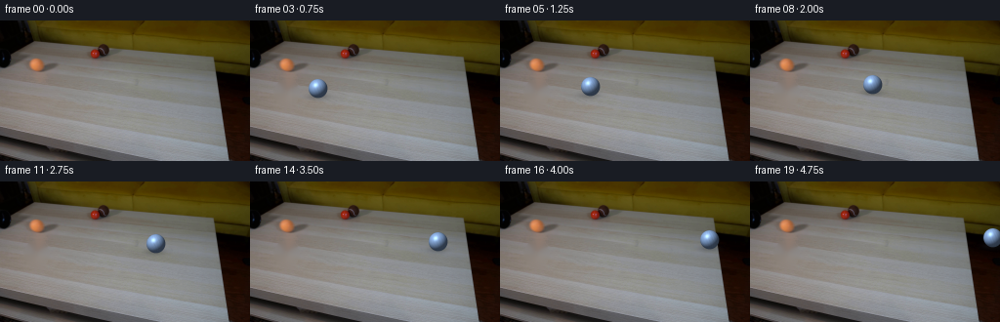
transition_check.png

代码变化
代码未变化；重新保存了产物。
候选 03 · 2026-11-08T19:58:42.288816+00:00 · 点开播放与检查图
transition_check.png

代码变化
--- 上一保存版本
+++ 本次保存版本
@@ -21,17 +21,15 @@
def make_clean_plate(source_bgr):
"""Remove the moving orange ball while retaining the photographed tabletop."""
- mask = np.zeros((HEIGHT, WIDTH), dtype=np.uint8)
- cv2.ellipse(mask, (37, 74), (13, 14), 0, 0, 360, 255, -1)
- plate = cv2.inpaint(source_bgr, mask, 5, cv2.INPAINT_TELEA)
-
- # The long wood grain is nearly horizontal. A tiny horizontal smoothing pass
- # inside the repaired patch hides the inpainter's isotropic blur.
- softened = cv2.GaussianBlur(plate, (0, 0), 0.65)
- alpha = cv2.GaussianBlur(mask.astype(np.float32) / 255.0, (0, 0), 1.2)
- plate = plate.astype(np.float32) * (1.0 - alpha[..., None])
- plate += softened.astype(np.float32) * alpha[..., None]
- return np.clip(plate, 0, 255).astype(np.uint8)
+ # A nearby clean strip of the same wood grain gives a much more natural
+ # plate than radial inpainting. Poisson blending matches the local light.
+ shift = 36
+ x0 = 37 - 30 + shift
+ y0 = 73 - 25
+ donor = source_bgr[y0:y0 + 50, x0:x0 + 60].copy()
+ patch_mask = np.zeros(donor.shape[:2], dtype=np.uint8)
+ cv2.ellipse(patch_mask, (30, 25), (14, 14), 0, 0, 360, 255, -1)
+ return cv2.seamlessClone(donor, source_bgr, patch_mask, (37, 73), cv2.NORMAL_CLONE)
def add_contact_shadow(image, center, radius):
候选 04 · 2026-11-08T19:58:44.189789+00:00 · 点开播放与检查图
inspection.png

transition_check.png
代码变化
代码未变化；重新保存了产物。
可观测工具行为
命令 1 · 2026-11-08T19:50:29.064242+00:00/bin/bash -c "pwd && rg --files -g 'prompt.txt' -g 'GENERATION_RULES.md' -g 'first_frame.png' -g '"'!*.mp4'"'"
exit 0 命令 2 · 2026-11-08T19:50:29.281601+00:00/bin/bash -c "ls -la && find . -maxdepth 2 -type f -printf '%p %s bytes\\n' | sort"
exit 0 命令 3 · 2026-11-08T19:50:29.582663+00:00/bin/bash -c 'command -v ffmpeg; command -v python3; command -v convert; command -v blender; command -v node; python3 --version'
exit 0 命令 4 · 2026-11-08T19:50:35.326076+00:00/bin/bash -c 'cat prompt.txt'
exit 0 命令 5 · 2026-11-08T19:50:35.513930+00:00/bin/bash -c 'cat GENERATION_RULES.md'
exit 0 命令 6 · 2026-11-08T19:50:35.812339+00:00/bin/bash -c "sed -n '1,240p' artifact_io.py; sed -n '1,220p' player_template.html"
exit 0 命令 7 · 2026-11-08T19:50:53.025159+00:00/bin/bash -c "python3 - <<'PY'
from PIL import Image
im=Image.open('first_frame.png')
print(im.mode, im.size)
print(im.getpixel((37,72)), im.getpixel((98,52)), im.getpixel((99,59)))
PY"exit 0 命令 8 · 2026-11-08T19:50:53.594135+00:00/bin/bash -c "command -v ffprobe; command -v avconv; command -v gifsicle; command -v magick; ls /usr/bin | rg 'ff|av|png|jpeg' | head -80"
exit 0 命令 9 · 2026-11-08T19:50:53.889051+00:00/bin/bash -c "python3 - <<'PY'
mods=['numpy','PIL','cv2','scipy','skimage']
for m in mods:
try:
x=__import__(m); print(m,'ok',getattr(x,'__version__',''))
except Exception as e: print(m,'no',e)
PY"
exit 0 命令 10 · 2026-11-08T19:51:02.735262+00:00/bin/bash -c "python3 - <<'PY'
from PIL import Image
im=Image.open('first_frame.png')
im.crop((0,30,150,100)).resize((900,420)).save('.tmp/crop.png')
PY"exit 0 命令 11 · 2026-11-08T19:51:40.255035+00:00/bin/bash -c "python3 - <<'PY'
import cv2, numpy as np
im=cv2.imread('first_frame.png')
hsv=cv2.cvtColor(im, cv2.COLOR_BGR2HSV)
# print orange candidates in left region
for y,x in [(72,37),(65,37),(78,37),(72,30),(72,45),(80,37),(52,98),(56,99)]:
print((x,y),'rgb',im[y,x][::-1],'hsv',hsv[y,x])
# threshold orange h low, sat high
roi=hsv[50:95,15:60]
mask=((roi[:,:,0]<30)&(roi[:,:,1]>90)&(roi[:,:,2]>100)).astype(np.uint8)*255
ys,xs=np.where(mask)
print(xs.min()+15,xs.max()+15,ys.min()+50,ys.max()+50,len(xs))
cv2.imwrite('.tmp/orange_mask.png',mask)
PY"exit 0 命令 12 · 2026-11-08T19:51:44.302961+00:00/bin/bash -c "python3 - <<'PY'
from PIL import Image
im=Image.open('first_frame.png')
im.crop((15,50,65,90)).resize((600,480),Image.Resampling.NEAREST).save('.tmp/ball_pixel.png')
PY"exit 0 命令 13 · 2026-11-08T19:51:51.637451+00:00/bin/bash -c "python3 - <<'PY'
import cv2, numpy as np
im=cv2.imread('first_frame.png')[:,:,::-1].astype(float)
# ball crop bbox around x20:52 y59:85, compare local table background inferred by median from nearby same rows
for y in range(58,88):
vals=[]
for x in range(18,55):
r,g,b=im[y,x]
if r>g*1.08 and g>b*1.02 and r>110: vals.append(x)
if vals: print(y,min(vals),max(vals),len(vals))
PY"exit 0 命令 14 · 2026-11-08T19:52:19.816474+00:00/bin/bash -c "python3 - <<'PY'
from PIL import Image
import cv2, numpy as np
im=cv2.imread('first_frame.png')
out=[]
for rad in [2,3,4,6]:
m=np.zeros(im.shape[:2],np.uint8)
cv2.ellipse(m,(37,73),(10,9),0,0,360,255,-1)
a=cv2.inpaint(im,m,rad,cv2.INPAINT_TELEA)
cv2.imwrite(f'.tmp/clean_t{rad}.png',a)
out.append(a[55:90,15:65])
cv2.imwrite('.tmp/inpaint_compare.png',cv2.resize(np.hstack(out),(800,280),interpolation=cv2.INTER_NEAREST))
PY"exit 0 命令 15 · 2026-11-08T19:52:32.553095+00:00/bin/bash -c "python3 - <<'PY'
from PIL import Image, ImageDraw
im=Image.open('first_frame.png')
im.crop((22,57,53,88)).resize((620,620),Image.Resampling.LANCZOS).save('.tmp/ball_lanczos.png')
# Mark coordinates grid enlarged
crop=im.crop((22,57,53,88)).resize((620,620),Image.Resampling.NEAREST)
d=ImageDraw.Draw(crop)
for i in range(32):
x=i*20
d.line((x,0,x,620),fill=(255,255,255),width=1)
d.line((0,x,620,x),fill=(255,255,255),width=1)
crop.save('.tmp/ball_grid.png')
PY"exit 0 命令 16 · 2026-11-08T19:53:34.276902+00:00/bin/bash -c "python3 - <<'PY'
from PIL import Image
import numpy as np
im=np.array(Image.open('first_frame.png'))
for y in range(62,84):
row=[]
for x in range(27,48):
r,g,b=im[y,x]
c='O' if r>g+12 and g>b+3 else ('o' if r>g+5 and g>=b else '.')
row.append(c)
print(f'{y:3d}', ''.join(row))
print('RGB sample ball')
for y in range(64,82,2):
print(y, [tuple(im[y,x]) for x in range(30,44,2)])
PY"exit 0 命令 17 · 2026-11-08T19:53:38.796917+00:00/bin/bash -c "python3 - <<'PY'
from PIL import Image
import numpy as np
im=np.array(Image.open('first_frame.png'))
# save selected colors at ball core as table csv
for y in range(60,88):
print(y, ' '.join('%02x%02x%02x'%tuple(im[y,x]) for x in range(22,55)))
PY"exit 0 命令 18 · 2026-11-08T19:53:43.311554+00:00/bin/bash -c "python3 - <<'PY'
from PIL import Image
import numpy as np
im=np.array(Image.open('first_frame.png'))
# pixel coords and values in 31x31 crop
for y in range(60,87):
row=''
for x in range(24,52):
r,g,b=map(int,im[y,x])
# orange/red chroma normalized by luminance
if r-g>20 and r-b>24: row+='X'
elif r-g>11 and r-b>15: row+='x'
elif r-g>6 and r-b>9: row+='o'
else: row+='.'
print(y,row)
PY"exit 0 命令 19 · 2026-11-08T19:53:48.178247+00:00/bin/bash -c "python3 - <<'PY'
import cv2, numpy as np
im=cv2.imread('first_frame.png')
# a few inpainting masks manually
for name,mask in [
('circle',cv2.ellipse(np.zeros(im.shape[:2],np.uint8),(37,72),(10,10),0,0,360,255,-1)),
('tight',cv2.ellipse(np.zeros(im.shape[:2],np.uint8),(37,72),(9,8),0,0,360,255,-1)),
('shift',cv2.ellipse(np.zeros(im.shape[:2],np.uint8),(37,72),(11,10),0,0,360,255,-1)),
]:
a=cv2.inpaint(im,mask,7,cv2.INPAINT_NS)
cv2.imwrite('.tmp/inp_'+name+'.png',a)
PY"exit 0 命令 20 · 2026-11-08T19:53:56.200546+00:00/bin/bash -c "python3 - <<'PY'
from PIL import Image
im=Image.open('first_frame.png')
im.crop((20,55,55,90)).resize((700,700),Image.Resampling.NEAREST).save('.tmp/ball_orig.png')
im=Image.open('.tmp/inp_circle.png')
im.crop((20,55,55,90)).resize((700,700),Image.Resampling.NEAREST).save('.tmp/ball_clean.png')
PY"exit 0 命令 21 · 2026-11-08T19:54:06.266458+00:00/bin/bash -c "python3 - <<'PY'
from PIL import Image
import numpy as np
im=np.array(Image.open('first_frame.png')).astype(int)
for y in range(62,84):
print(y, [(x, tuple(im[y,x])) for x in range(26,49) if im[y,x,0]-im[y,x,1]>10])
PY"exit 0 命令 22 · 2026-11-08T19:54:10.886573+00:00/bin/bash -c "python3 - <<'PY'
from PIL import Image
import numpy as np
im=np.array(Image.open('first_frame.png'))
# Print positions where absolute color likely ball: use local difference against clean inpaint, positive orange chroma
clean=np.array(Image.open('.tmp/inp_circle.png'))
for y in range(56,90):
xs=[]
for x in range(18,60):
a=im[y,x].astype(int); b=clean[y,x].astype(int)
if (a[0]-a[1])-(b[0]-b[1])>8: xs.append(x)
if xs: print(y,min(xs),max(xs),xs)
PY"exit 0 命令 23 · 2026-11-08T19:54:15.177924+00:00/bin/bash -c "python3 - <<'PY'
from PIL import Image
im=Image.open('first_frame.png')
for box,name in [((0,0,140,110),'left'),((50,35,145,95),'mid'),((140,0,256,120),'right'),((0,70,256,144),'bottom')]:
im.crop(box).resize(((box[2]-box[0])*5,(box[3]-box[1])*5),Image.Resampling.NEAREST).save('.tmp/'+name+'.png')
PY"exit 0 命令 24 · 2026-11-08T19:54:22.737603+00:00/bin/bash -c "python3 - <<'PY'
import cv2
im=cv2.imread('first_frame.png')
for x,y in [(20,55),(30,55),(20,70),(50,70),(100,52),(95,52),(104,52),(98,55),(30,75),(37,80)]:
print(x,y,im[y,x][::-1])
PY"exit 0 命令 25 · 2026-11-08T19:54:28.159246+00:00/bin/bash -c "python3 - <<'PY'
import cv2, numpy as np
im=cv2.imread('first_frame.png')
# Inspect color channels in ROI against smooth background model. ball appears high R/G and B lower, but use signed redness
b,g,r=cv2.split(im)
roi=(slice(58,86),slice(25,50))
d=(r.astype(int)-g.astype(int))[roi]
print('minmax',d.min(),d.max(),np.percentile(d,[10,25,50,75,90]))
# local darkness plus chroma
for th in [5,10,15,20,25,30]:
m=d>th
ys,xs=np.where(m)
print(th, (xs.min()+25,xs.max()+25,ys.min()+58,ys.max()+58) if len(xs) else None,len(xs))
# visualize chroma
norm=np.clip((d+20)*5,0,255).astype(np.uint8)
cv2.imwrite('.tmp/chroma.png',cv2.resize(norm,(250,280),interpolation=cv2.INTER_NEAREST))
PY"exit 0 命令 26 · 2026-11-08T19:54:32.895577+00:00/bin/bash -c "python3 - <<'PY'
from PIL import Image
import numpy as np
im=np.array(Image.open('first_frame.png')).astype(int)
for y in range(60,84):
vals=[]
for x in range(22,52):
r,g,b=im[y,x]
# more saturated than background: r-b high
if r-b>18 and r-g>8: vals.append(x)
if vals: print(y, vals)
PY"exit 0 命令 27 · 2026-11-08T19:54:38.076729+00:00/bin/bash -c "python3 - <<'PY'
from PIL import Image
import numpy as np
im=np.array(Image.open('first_frame.png')).astype(float)
# Compare row mean of background right side x=55..110 and ball region to identify chroma. print colors every pixel row and x in compact
for y in range(58,86):
# list x sorted by r-b
vals=[]
for x in range(22,55):
r,g,b=im[y,x]
vals.append((r-b,x, int(r),int(g),int(b)))
vals.sort(reverse=True)
print(y, vals[:8])
PY"exit 0 命令 28 · 2026-11-08T19:54:43.438606+00:00/bin/bash -c "python3 - <<'PY'
from PIL import Image
import numpy as np
im=np.array(Image.open('first_frame.png'))
# make tiles x 15..70 y45..95 each pixel enlarged and label 5-grid
crop=im[45:95,15:70]
Image.fromarray(crop).resize((550,500),Image.Resampling.NEAREST).save('.tmp/ball_tile.png')
# nearest, mark 5 px grid with translucent? use PIL overlay after resize
from PIL import ImageDraw
out=Image.fromarray(crop).resize((550,500),Image.Resampling.NEAREST)
d=ImageDraw.Draw(out)
for i in range(11): d.line((i*50,0,i*50,500),fill=(255,0,0),width=1)
for i in range(11): d.line((0,i*50,550,i*50),fill=(255,0,0),width=1)
out.save('.tmp/ball_tile_grid.png')
PY"exit 0 命令 29 · 2026-11-08T19:54:50.844541+00:00/bin/bash -c "python3 - <<'PY'
import cv2
im=cv2.imread('first_frame.png')
hsv=cv2.cvtColor(im,cv2.COLOR_BGR2HSV)
for y in range(56,86):
xs=[]
for x in range(18,60):
h,s,v=hsv[y,x]
if s>70 and v>90: xs.append(x)
if xs: print(y,min(xs),max(xs))
PY"exit 0 命令 30 · 2026-11-08T19:54:55.672252+00:00/bin/bash -c "python3 - <<'PY'
from PIL import Image
im=Image.open('first_frame.png')
# print average crop multiple view with exact 1x pixel matrix ASCII using luminance quantiles
import numpy as np
a=np.array(im).astype(int)
crop=a[50:90,15:60]
lum=(crop[:,:,0]*.299+crop[:,:,1]*.587+crop[:,:,2]*.114)
chars=' .:-=+*#%@'
for row in lum:
print(''.join(chars[min(9,int(v/256*10))] for v in row))
PY"exit 0 命令 31 · 2026-11-08T19:55:20.177833+00:00/bin/bash -c "python3 - <<'PY'
from PIL import Image
import numpy as np, colorsys
im=np.array(Image.open('first_frame.png')).astype(int)
for y in range(52,88):
row=''
for x in range(18,58):
r,g,b=im[y,x]; mx=max(r,g,b); mn=min(r,g,b); s=(mx-mn)/max(1,mx)
if s>.19 and r>g>=b: c='X'
elif s>.15 and r>g>=b: c='x'
elif s>.12 and r>g>=b: c='o'
elif s>.09 and r>g>=b: c='.'
else: c=' '
row+=c
print(f'{y:3d} {row}')
PY"exit 0 命令 32 · 2026-11-08T19:55:44.288019+00:00/bin/bash -c "python3 - <<'PY'
from PIL import Image
import numpy as np
im=np.array(Image.open('first_frame.png')).astype(int)
clean=np.array(Image.open('.tmp/inp_circle.png')).astype(int)
d=np.abs(im-clean).sum(2)
for y in range(55,91):
row=''
for x in range(18,62):
v=d[y,x]
c='@' if v>45 else '#' if v>30 else '+' if v>18 else '.' if v>8 else ' '
row+=c
print(f'{y:3d} {row}')
PY"exit 0 命令 33 · 2026-11-08T19:55:48.687204+00:00/bin/bash -c "python3 - <<'PY'
from PIL import Image
import numpy as np
im=np.array(Image.open('first_frame.png'))
for y in range(60,86):
print(y, [(x,tuple(im[y,x])) for x in range(18,60) if int(im[y,x,0])-int(im[y,x,2])>=22])
PY"exit 0 命令 34 · 2026-11-08T19:55:54.064124+00:00/bin/bash -c "python3 - <<'PY'
import cv2, numpy as np
im=cv2.imread('first_frame.png')
for name,method in [('telea',cv2.INPAINT_TELEA),('ns',cv2.INPAINT_NS)]:
for r in [3,5,8,12]:
m=np.zeros(im.shape[:2],np.uint8)
cv2.ellipse(m,(37,73),(10,10),0,0,360,255,-1)
a=cv2.inpaint(im,m,r,method)
# calculate seam difference around boundary
print(name,r,'mean diff',np.mean(np.abs(a[63:83,27:47].astype(float)-im[63:83,27:47].astype(float))))
cv2.imwrite(f'.tmp/inp_{name}_{r}.png',a)
PY"exit 0 命令 35 · 2026-11-08T19:56:56.493452+00:00/bin/bash -c 'python3 generate.py'
exit 1 命令 36 · 2026-11-08T19:57:05.717191+00:00/bin/bash -c 'python3 generate.py && ls -lh frames inspection.png transition_check.png pixels.npz index.html'
exit 1 命令 37 · 2026-11-08T19:57:16.086073+00:00/bin/bash -c 'python3 generate.py && ls -lh frames inspection.png transition_check.png pixels.npz index.html'
exit 0 命令 38 · 2026-11-08T19:57:28.559412+00:00/bin/bash -c "python3 - <<'PY'
from PIL import Image, ImageDraw
for i in [0,1,2,5,10,19]:
im=Image.open(f'frames/{i:02d}.png')
im.crop((0,30,256,110)).resize((768,240),Image.Resampling.NEAREST).save(f'.tmp/f{i:02d}_strip.png')
# combine
out=Image.new('RGB',(768,240*6),(20,20,20))
for j,i in enumerate([0,1,2,5,10,19]): out.paste(Image.open(f'.tmp/f{i:02d}_strip.png'),(0,j*240))
out.save('.tmp/render_strips.png')
PY"exit 0 命令 39 · 2026-11-08T19:57:37.408343+00:00/bin/bash -c "python3 - <<'PY'
from PIL import Image
import numpy as np
a=np.array(Image.open('first_frame.png'))
b=np.array(Image.open('frames/00.png'))
print('frame0 identical',np.array_equal(a,b),np.max(np.abs(a.astype(int)-b.astype(int))))
for i in [1,2,5,10,19]:
im=np.array(Image.open(f'frames/{i:02d}.png')).astype(int)
print(i, 'orange bbox')
# compare against clean approximate: strong orange pixels
ys,xs=np.where((im[:,:,0]-im[:,:,1]>10)&(im[:,:,0]-im[:,:,2]>18)&(im[:,:,0]>115))
print((xs.min(),xs.max(),ys.min(),ys.max(),len(xs)) if len(xs) else None)
PY"exit 0 命令 40 · 2026-11-08T19:57:44.019352+00:00/bin/bash -c "python3 - <<'PY'
from PIL import Image
import numpy as np
for i in [1,2,5,10,19]:
im=np.array(Image.open(f'frames/{i:02d}.png'))
# region around expected center
cx=37+212*i/19; cy=72.3-13.8*i/19
x0,y0=int(cx-15),int(cy-15)
Image.fromarray(im[y0:y0+30,x0:x0+30]).resize((600,600),Image.Resampling.NEAREST).save(f'.tmp/ball{i:02d}.png')
PY"exit 0 命令 41 · 2026-11-08T19:58:00.805972+00:00/bin/bash -c "python3 - <<'PY'
import cv2, numpy as np
src=cv2.imread('first_frame.png')
mask=np.zeros(src.shape,np.uint8)
cv2.ellipse(mask,(37,73),(14,14),0,0,360,255,-1)
# seamless clone from donor area shifted x
for shift in [28,32,36,42]:
patch=src[50:100,10+shift:70+shift].copy()
# patch coordinate center x=40+shift, y=75
try:
out=cv2.seamlessClone(patch,src,mask,(37,73),cv2.NORMAL_CLONE)
cv2.imwrite(f'.tmp/clone{shift}.png',out)
except Exception as e: print(shift,e)
PY"exit 0 命令 42 · 2026-11-08T19:58:06.051237+00:00/bin/bash -c "python3 - <<'PY'
import cv2, numpy as np
src=cv2.imread('first_frame.png')
mask=np.zeros(src.shape[:2],np.uint8)
cv2.ellipse(mask,(37,73),(14,14),0,0,360,255,-1)
for shift in [28,32,36,42]:
x0,x1=10+shift,70+shift
patch=src[50:100,x0:x1].copy()
# patch center is (40+shift,75); clone centered 37,73
try:
out=cv2.seamlessClone(patch,src,mask,(37,73),cv2.NORMAL_CLONE)
cv2.imwrite(f'.tmp/clone{shift}.png',out)
except Exception as e: print(shift,e)
PY"exit 0 命令 43 · 2026-11-08T19:58:11.241509+00:00/bin/bash -c "python3 - <<'PY'
import cv2, numpy as np
src=cv2.imread('first_frame.png')
mask=np.zeros(src.shape[:2],np.uint8)
cv2.ellipse(mask,(37,73),(14,14),0,0,360,255,-1)
# source crop center should exactly at clone center; pick crop centered on target but donor shifted
for shift in [28,32,36,42]:
x0=37-30+shift; y0=73-25
patch=src[y0:y0+50,x0:x0+60].copy()
print(shift,patch.shape)
try:
out=cv2.seamlessClone(patch,src,mask,(37,73),cv2.NORMAL_CLONE)
cv2.imwrite(f'.tmp/clone{shift}.png',out)
except Exception as e: print(shift,e)
PY"exit 0 命令 44 · 2026-11-08T19:58:16.818799+00:00/bin/bash -c "python3 - <<'PY'
import cv2, numpy as np
src=cv2.imread('first_frame.png')
for shift in [28,32,36,42]:
x0=37-30+shift; y0=73-25
patch=src[y0:y0+50,x0:x0+60].copy()
mask=np.zeros(patch.shape[:2],np.uint8)
cv2.ellipse(mask,(30,25),(14,14),0,0,360,255,-1)
out=cv2.seamlessClone(patch,src,mask,(37,73),cv2.NORMAL_CLONE)
cv2.imwrite(f'.tmp/clone{shift}.png',out)
PY"exit 0 命令 45 · 2026-11-08T19:58:21.257211+00:00/bin/bash -c "python3 - <<'PY'
from PIL import Image
im=Image.new('RGB',(4*180,180))
for j,s in enumerate([28,32,36,42]):
a=Image.open(f'.tmp/clone{s}.png').crop((15,50,60,95)).resize((180,180),Image.Resampling.NEAREST)
im.paste(a,(j*180,0))
im.save('.tmp/clones.png')
PY"exit 0 命令 46 · 2026-11-08T19:58:29.418044+00:00/bin/bash -c "python3 - <<'PY'
from PIL import Image
import numpy as np
for s in [28,32,36,42]:
a=np.array(Image.open(f'.tmp/clone{s}.png'))
print(s, a[73,37], a[80,37], a[65,37])
PY"exit 0 命令 47 · 2026-11-08T19:58:42.068841+00:00/bin/bash -c "python3 generate.py && python3 - <<'PY'
from PIL import Image
import numpy as np
a=np.asarray(Image.open('first_frame.png')); b=np.asarray(Image.open('frames/00.png'))
print('frame00 exact:',np.array_equal(a,b))
for i in [1,3,8,13,19]:
im=Image.open(f'frames/{i:02d}.png')
im.crop((0,35,256,110)).resize((768,225),Image.Resampling.NEAREST).save(f'.tmp/check{i:02d}.png')
PY"exit 0 命令 48 · 2026-11-08T19:59:00.469018+00:00/bin/bash -c "python3 - <<'PY'
from pathlib import Path
import json, numpy as np
from PIL import Image
p=Path('.')
z=np.load(p/'pixels.npz')['pixels']
frames=np.stack([np.asarray(Image.open(p/'frames'/f'{i:02d}.png')) for i in range(20)])
print('shape',frames.shape,'dtype',frames.dtype,'minmax',frames.min(),frames.max())
print('pixels shape/dtype',z.shape,z.dtype)
print('frame00 exact',np.array_equal(frames[0],np.asarray(Image.open('first_frame.png'))))
print('changed pixels/frame', [int(np.count_nonzero(np.any(frames[i]"'!=frames[0],axis=2))) for i in range(1,20)])
html=(p/'"'index.html').read_text()
print('player ready', 'window.__pixelReady=true' in html, 'html bytes',len(html))
print('files',[(x.name,x.stat().st_size) for x in sorted(p.iterdir()) if x.is_file()])
PY"exit 0 命令 49 · 2026-11-08T19:59:05.824899+00:00/bin/bash -c "python3 - <<'PY'
import numpy as np
z=np.load('pixels.npz')['pixels']
for i in range(20):
c=z[:,:,i]
# orange in packed RGB: red channel > green+10 and red > blue+18
r=(c>>16)&255; g=(c>>8)&255; b=c&255
ys,xs=np.where((r.astype(int)-g>10)&(r.astype(int)-b>18)&(r>115))
if len(xs):
# exclude static brown/red balls by x<110 or i 0
print(i,(xs.min(),xs.max(),ys.min(),ys.max(),round(xs.mean(),1),round(ys.mean(),1)))
PY"exit 0 命令 50 · 2026-11-08T19:59:15.880018+00:00/bin/bash -c "python3 - <<'PY'
from PIL import Image
import numpy as np
im=np.array(Image.open('first_frame.png'))
# Ball bbox rough x26..49 y62..82. Compute center using excess saturation relative to nearby row median.
roi=im[58:86,22:55].astype(float)
# chroma score red minus average gb, relative background baseline 10
score=roi[:,:,0]-0.5*(roi[:,:,1]+roi[:,:,2])
print(np.percentile(score,[50,75,85,90,95,99]), score.max())
for t in [14,16,18,20,22,24]:
yy,xx=np.where(score>t)
print(t, len(xx), (xx.min()+22,xx.max()+22,yy.min()+58,yy.max()+58) if len(xx) else None)
PY"exit 0 命令 51 · 2026-11-08T19:59:20.781014+00:00/bin/bash -c "python3 - <<'PY'
from PIL import Image
import numpy as np
im=np.array(Image.open('first_frame.png'))
# Print ROI with per-pixel red-minus-green normalized; white-ish chars
for y in range(55,88):
s=''
for x in range(20,57):
r,g,b=im[y,x].astype(int)
d=r-g
s += 'X' if d>=18 else 'x' if d>=13 else 'o' if d>=9 else '.' if d>=6 else ' '
print(f'{y:3d} {s}')
PY"exit 0 命令 52 · 2026-11-08T19:59:25.702461+00:00/bin/bash -c "python3 - <<'PY'
from PIL import Image
im=Image.open('first_frame.png')
# Add explicit coordinate ticks to enlarged source crop
from PIL import ImageDraw, ImageFont
crop=im.crop((0,40,80,100)).resize((800,600),Image.Resampling.NEAREST)
d=ImageDraw.Draw(crop)
for i in range(9): d.line((i*100,0,i*100,600),fill=(255,0,0),width=1)
for j in range(7): d.line((0,j*100,800,j*100),fill=(255,0,0),width=1)
crop.save('.tmp/ball_coord.png')
PY"exit 0 命令 53 · 2026-11-08T19:59:33.791710+00:00/bin/bash -c "python3 - <<'PY'
from PIL import Image
import numpy as np
im=np.array(Image.open('first_frame.png'))
# clean plate means background compare to rows just above/below ball, estimate ball color by negative difference to inpaint
clean=np.array(Image.open('.tmp/clone36.png'))
diff=im.astype(int)-clean.astype(int)
for y in range(58,85):
xs=[]
for x in range(20,60):
# sum absolute diff
if np.abs(diff[y,x]).sum()>12: xs.append(x)
if xs: print(y,min(xs),max(xs),len(xs))
PY"exit 0 命令 54 · 2026-11-08T19:59:39.102231+00:00/bin/bash -c "python3 - <<'PY'
from PIL import Image
import numpy as np
for i in [0,1,2,5,10,15,19]:
im=np.array(Image.open(f'frames/{i:02d}.png'))
# crop ball region at manually expected center
cx=37+(249-37)*i/19; cy=72.3+(58.5-72.3)*i/19
crop=im[int(cy)-13:int(cy)+14,int(cx)-13:int(cx)+14]
Image.fromarray(crop).resize((405,405),Image.Resampling.NEAREST).save(f'.tmp/ball_zoom_{i:02d}.png')
PY"exit 0 命令 55 · 2026-11-08T19:59:51.996870+00:00/bin/bash -c "python3 - <<'PY'
from PIL import Image
import numpy as np
im=np.array(Image.open('frames/01.png'))
clean=np.array(Image.open('frames/01.png'))
# dominant center of high chroma in crop around 48,72
r=im[:,:,0].astype(int);g=im[:,:,1].astype(int);b=im[:,:,2].astype(int)
mask=(r-g>20)&(r-b>30)&(r>110)
mask[:,:20]=False; mask[:,70:]=False; mask[:50]=False; mask[100:]=False
ys,xs=np.where(mask)
print(len(xs), xs.min(),xs.max(),ys.min(),ys.max(),xs.mean(),ys.mean())
# print RGB around center
for y in range(66,79):
print(y,[tuple(im[y,x]) for x in range(42,57)])
PY"exit 0 视觉工具实际返回图片 1

视觉工具实际返回图片 2
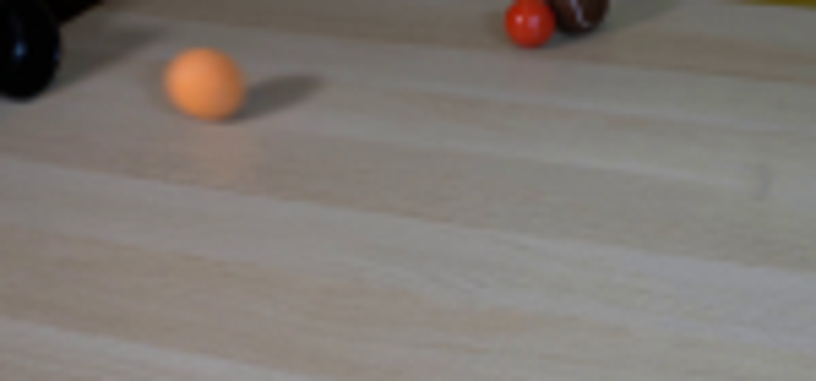
视觉工具实际返回图片 3
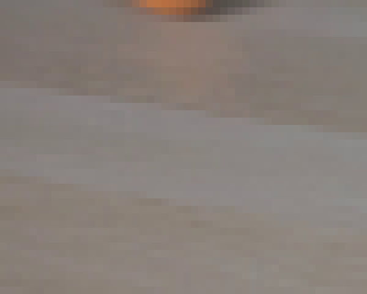
视觉工具实际返回图片 4
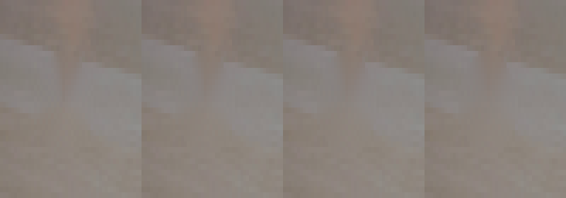
视觉工具实际返回图片 5
视觉工具实际返回图片 6
视觉工具实际返回图片 7
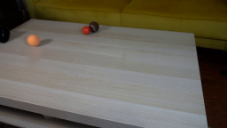
视觉工具实际返回图片 8
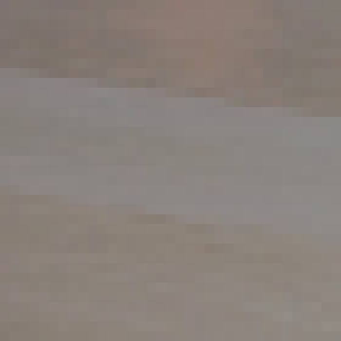
视觉工具实际返回图片 9
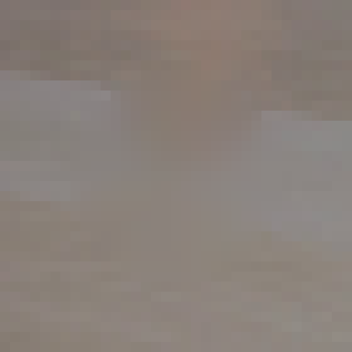
视觉工具实际返回图片 10
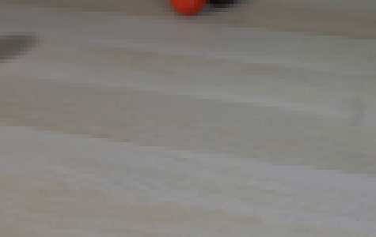
视觉工具实际返回图片 11
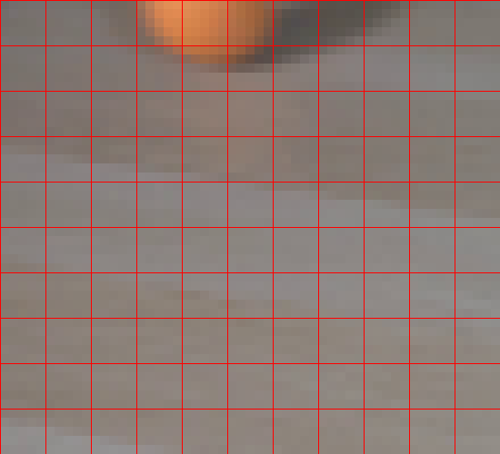
视觉工具实际返回图片 12
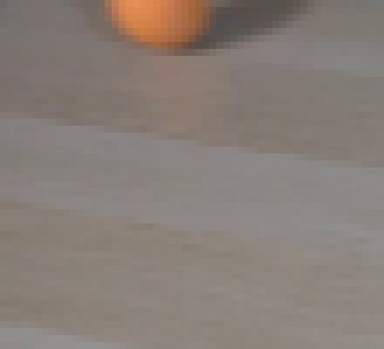
视觉工具实际返回图片 13

视觉工具实际返回图片 14
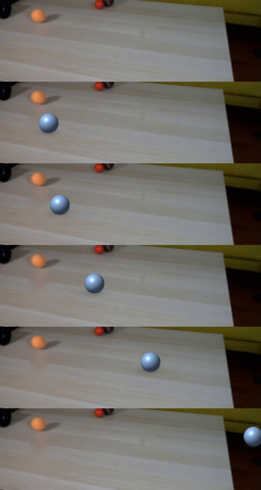
视觉工具实际返回图片 15
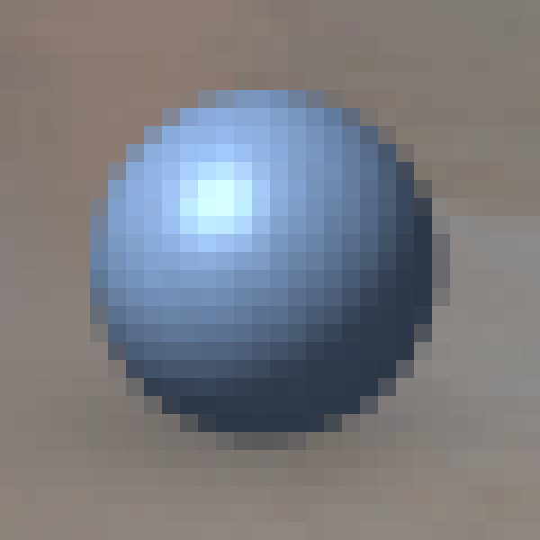
视觉工具实际返回图片 16
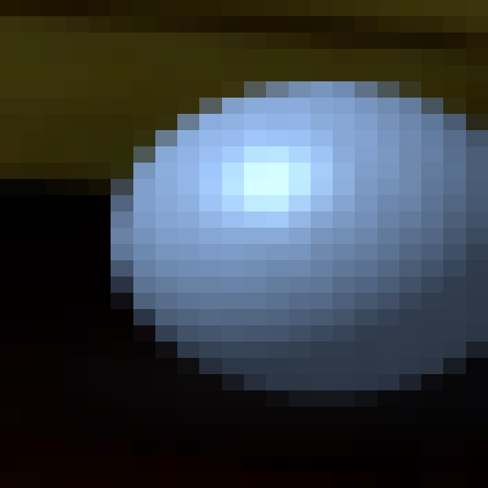
视觉工具实际返回图片 17
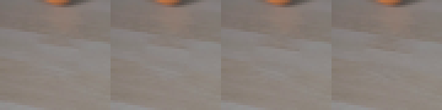
视觉工具实际返回图片 18
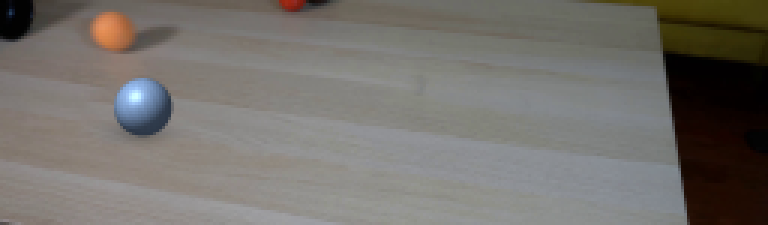
视觉工具实际返回图片 19
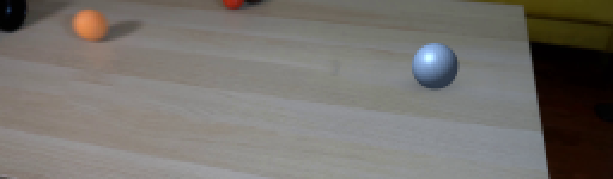
视觉工具实际返回图片 20
视觉工具实际返回图片 21
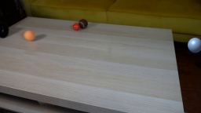
视觉工具实际返回图片 22
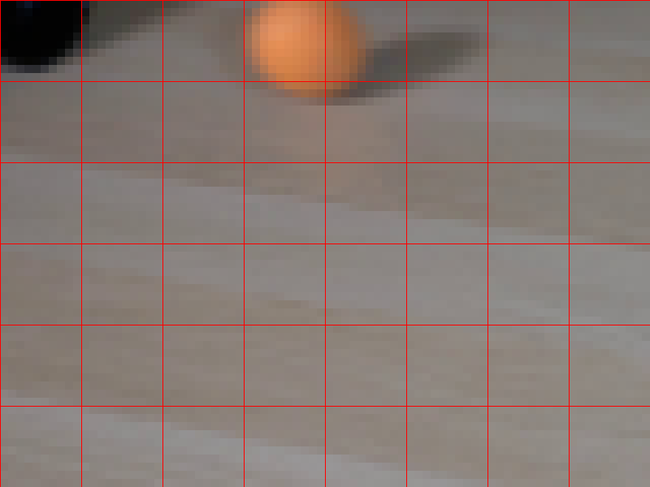
视觉工具实际返回图片 23
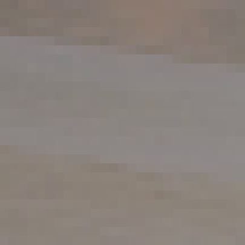
视觉工具实际返回图片 24
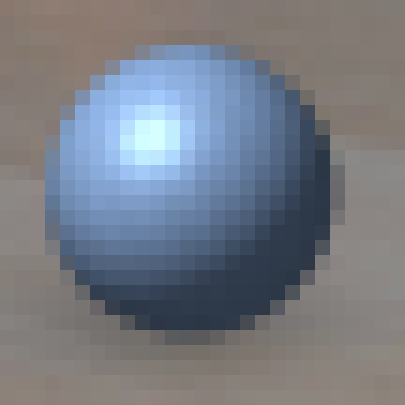
视觉工具实际返回图片 25
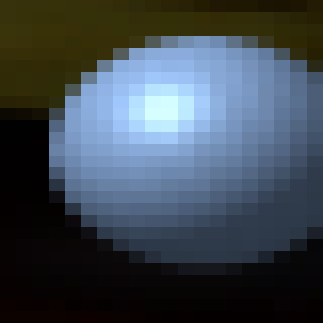
保存候选 4 份；完成命令 55 次；可验证图片返回 25 张。原始 API 响应与完整日志保留在本地。